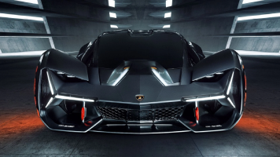

|  |
Lamborghini Terzo Millennio
|
The Lamborghini Terzo Millennio is a concept car that was first unveiled in 2017 as a collaboration between Lamborghini and the Massachusetts Institute of Technology (MIT). The car is named "Terzo Millennio," which means "third millennium" in Italian, and it was designed to be a visionary interpretation of what a supercar of the future could be like.
The Terzo Millennio features a fully electric powertrain, which is powered by four independent electric motors, one for each wheel. The car also features advanced energy storage technologies, including supercapacitors and carbon fiber nanotube batteries, which are designed to provide high power and fast charging.
The Terzo Millennio's exterior design is characterized by sharp angles and aggressive styling, with aerodynamic features that are designed to improve its performance and efficiency. The car's body is made entirely of carbon fiber, and it features advanced self-healing materials that can detect and repair small cracks and damage.
The Terzo Millennio's interior is also designed to be futuristic and high-tech, with a driver-focused layout and advanced technologies that provide real-time data on the car's performance and energy use.
Overall, the Lamborghini Terzo Millennio is a concept car that represents Lamborghini's vision for the future of supercars. It showcases advanced technologies and innovative design features that are aimed at improving performance, efficiency, and sustainability. While the Terzo Millennio is not currently planned for production, it provides a glimpse into what Lamborghini's supercars of the future could look like.